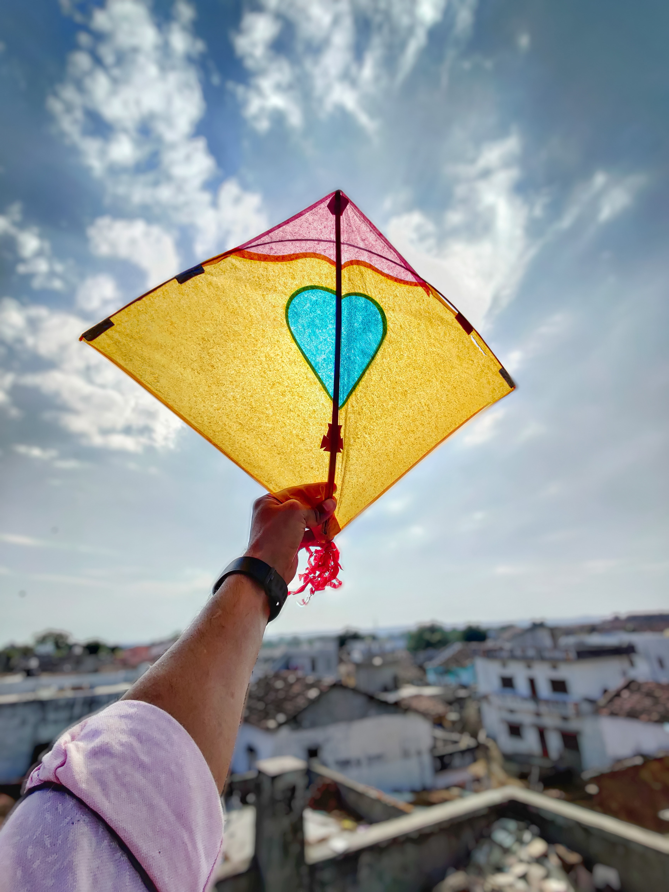

FESTIVAL OF INDIA
1) Navrati

Navratri is a festival in which people joyously worship Goddess Durga. Indians celebrate this festival with a lot of joy and enthusiasm. Further, the meaning of ‘Nav’ is nine and ‘Ratri’ refers to night. Thus, the festival derives its name as we celebrate it over a period of nine nights.We celebrate the festival for nine nights and ten days. The festival occurs in the month of October or November. Moreover, in India, people celebrate it four times every year. We refer to these times as Sharada Navratri, Vasanta Navratri, Magha Navratri and Ashada Navratri.
2) Holi
Holi is known as the festival of colours. It is one of the most important festivals in India. Holi is celebrated each year with zeal and enthusiasm in the month of March by followers of the Hindu religion. Those who celebrate this festival, wait for it every year eagerly to play with colours and have delectable dishes.Holi is about celebrating happiness with friends and family. People forget their troubles and indulge in this festival to celebrate brotherhood. In other words, we forget our enmities and get into the festival spirit. Holi is called the festival of colours because people play with colours and apply them to each other’s faces to get coloured in the essence of the festival.
3) Ganesh Chaturthi

Ganesh Chaturthi is celebrated for a whole 11 days. It begins on the Chaturthi when people install the statue of Lord Ganesha in their homes and temples. This festival ends on Anant Chaturdashi with Ganesh Visarjan. The devotees of the Lord Ganesha offer their prayers to God. They sing devotional songs for him and recited various mantras in his praise. They perform aartis in favour of the lord and seek his blessings on them.Most importantly, they offer Lord Ganesha sweets. Ganesha Chaturthi especially calls for Modak. Devotees offer Lord Ganesha with Modak, which is the lord’s favorite dessert. Modaks are sweet dumplings which people make with a filling of coconut and jaggery. They either fry them or steam them. People at homes and sweet shops make this sweet delicacy. They are seen around Ganesha Chaturthi mostly and are a huge hit amongst children.
4) Eid-Ul-Fitr

- Eid ul-Fitr is a very important festival for Muslims. It is vital in the Islamic calendar and Prophet Muhammad himself started it. People refer to it as ‘The Feast of Breaking the Fast’ and Muslims worldwide celebrate it to mark the end of Ramadan.
- Eid traditionally start with prayers then a short sermon follows. In some countries, the prayers occur outside, while others are hosted in mosques or large halls. After the prayers, Muslims wish everyone around them a Happy Eid. After that, they visit their relatives and friends to enjoy each other and have a feast.
- The festival begins when the first sight of the new moon is seen in the sky. Everyone wakes up early in the morning and takes a bath. They wear new attire and get ready in their best clothes. They decorate their homes which give a festive look and atmosphere. The men of the family go to a local mosque to offer prayers while the women read the Namaz at home. After the Eid prayers, they visit their neighbours, friends and relatives. They greet each other by saying “Eid mubarak” or “Eid sa’eed”.
5) Basant Panchami

- Vasant Panchami is known as Saraswati Puja in North India. Goddess Saraswati, the goddess of wisdom, language, music, art, and the force of desire, is worshipped on this day. Yellow clothes are worn by people as a symbolic depiction of mustard flowers. The mustard fields bloom with yellow blossoms at this time of year. Vasant Panchami, also known as Basant Panchami, is a wonderful festival that celebrates our country's traditions. Here is the essay or speech idea for students on Basant Panchami or Saraswati Puja.
- Vasant Panchami is a festival that is widely observed in India. In India, it is known as Vasant Utsav. People dress in yellow to worship Goddess Saraswati. The arrival of spring is marked by yellow-flowered mustard fields across the country, thus many people wear yellow on this day. People go to temples to offer puja and eat prasadam. Many parents mark the occasion by writing and reading their children's first words.
- The festival of Vasant Panchami in Bengal, is observed on a huge scale. On the fifth day of Shukla Paksha in the Magha month, Vasant Panchami is observed. Vasant Utsav is celebrated in January or February. It's also known as Saraswati Puja or Sri Panchami. Goddess Saraswati is worshipped on this day who is the goddess of wisdom, art, language, and knowledge.
6) GEMINI SOLUTIONS PVT LTD
![Gemini Solutions]()
CLICK TO OPEN OFFICIAL SITE OF
GEMINI SOLUTIONS